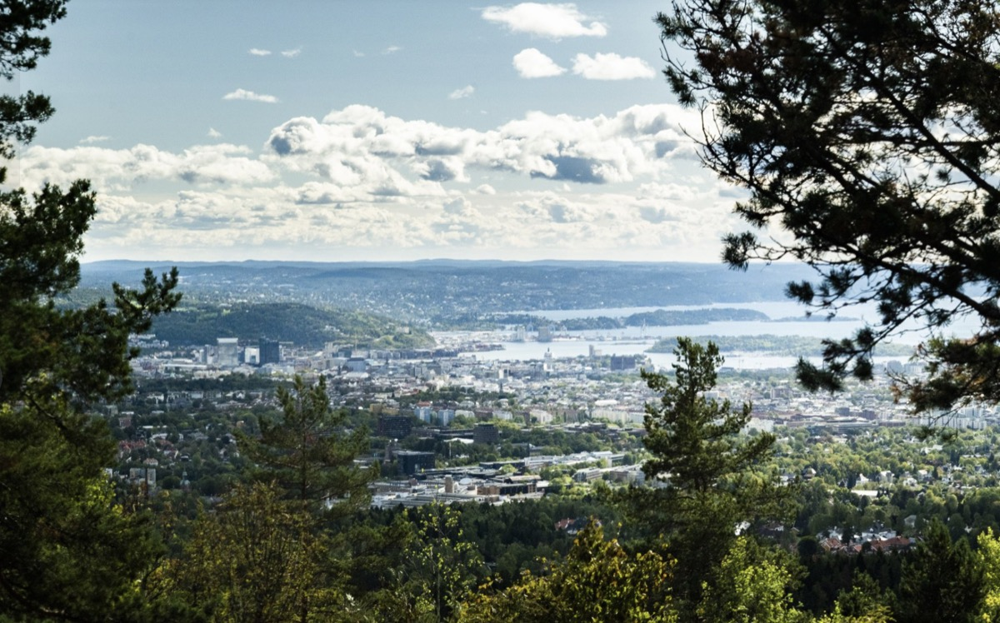
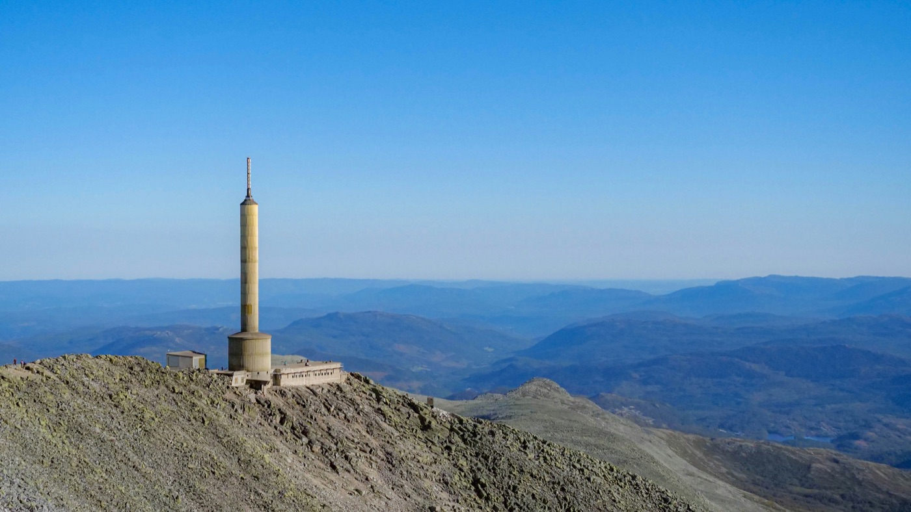
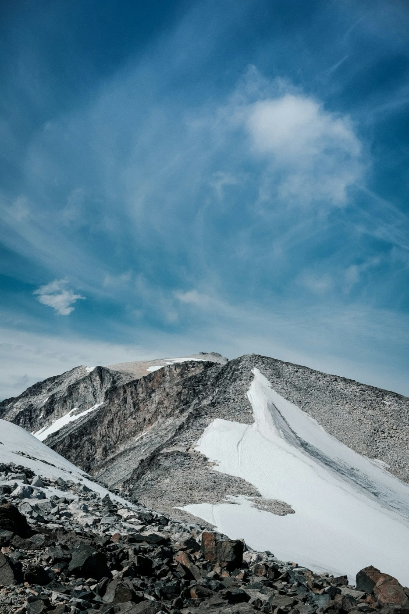

Oslo is one of the few capital cities in Europe within striking distance of genuine mountain wilderness. In under an hour you can be in Nordmarka forest. In five hours, on top of Scandinavia. These are the three greatest mountain day trips you can make from the city.

The closest mountain day trip from Oslo. Vettakollen sits in Nordmarka — the vast forested wilderness that begins at the edge of the city's suburbs. The hike winds through birch and pine forest to a rocky summit with sweeping views over Oslo and the Oslofjord. It is the most accessible introduction to Norwegian outdoor life: genuine terrain, real forest, a proper summit — all within 30 minutes of the city centre.

Two and a half hours south of Oslo in Telemark, Gaustatoppen (1,883m) is Norway's most spectacular viewpoint. On a clear day you can see one sixth of Norway from the summit — coast, mountains, lakes and valleys in every direction. The hike is a sustained but straightforward climb on well-marked trails. No technical experience required, just solid walking fitness. The most popular mountain day trip from Oslo for good reason.

The ultimate mountain day trip from Oslo — five hours northwest to the highest peak in Norway, Scandinavia and all of Northern Europe. Galdhøpiggen stands at 2,469 metres. Pickup is at 05:00; you return to Oslo around midnight. It is a demanding 19-hour day, but the summit is one of the most accessible high-alpine peaks in Europe — reached without technical climbing from the mountain lodge at Spiterstulen (1,100m).
No car needed — we handle everything
Most of these mountains are difficult or impossible to reach from Oslo without your own vehicle. Public transport options exist for some destinations, but involve multiple connections and limited schedules. Oslo Hiking Tours was built precisely for this: hotel pickup from central Oslo, all driving to the trailhead and back, and an expert guide for the entire day. You bring yourself — we handle the rest.
The three greatest mountain day trips from Oslo are Vettakollen (30 min, easy forest hike with city views), Gaustatoppen (2.5 hrs, Norway's most spectacular summit panorama) and Galdhøpiggen (5 hrs, the highest peak in Scandinavia). All are reachable in a single day from Oslo.
Yes — and that's exactly what Oslo Hiking Tours is for. Reaching mountains like Galdhøpiggen without your own vehicle involves complicated combinations of trains, buses and boats with limited schedules. We pick you up from your hotel door in central Oslo and handle all the driving. No car hire, no navigation, no logistics.
Vettakollen is a half-day — you can be back at your hotel before lunch. Gaustatoppen is a comfortable full day, typically returning by early evening. Galdhøpiggen is the longest: pickup at 05:00, return around midnight — approximately 19 hours door to door.
Gaustatoppen is the most popular choice — a moderate mountain day trip with one of the most spectacular summit views in all of Norway, accessible as a comfortable day out from Oslo. For something closer to the city, Vettakollen gives a genuine taste of Norwegian outdoor life just 30 minutes away.
Yes — every trip is fully private. There are no shared vans, no group tours, no strangers. The guide, the car and the day are entirely yours. Standard trips are priced for groups of up to 4 guests. Larger groups are welcome — contact us for a tailored quote.